Bedingung für eine Basis einer Topologie
1. Satz
Sei  eine Menge und
eine Menge und  ein Mengensystem.
Dann sind folgende Aussagen äquivalent:
a)
ein Mengensystem.
Dann sind folgende Aussagen äquivalent:
a)  ist eine Basis einer Topologie
ist eine Basis einer Topologie  b) Es gelten folgende Aussagen
b) Es gelten folgende Aussagen
- 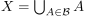
- Für
 existieren 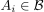, so dass gilt: 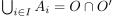
existieren 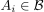, so dass gilt: 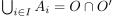
2. Beweis
2.1. a) Basis  Bedingungen
Bedingungen
2.1.1. i)
Nach den Mengen in einer Topologie ist offen, d.h. es existieren mit .
Desweiteren gilt 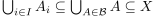, so dass folgt:
2.1.2. ii)
Nach der Abgeschlossenheit gegenüber endlichen Schnitten (Topologie) folgt, dass 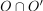 offen ist und nach Konstruktion existieren damit mit
2.2. b) Bedingungen Basis
2.2.1. Mengen
 gilt:
gilt:
2.2.2. Abgeschlossenheit gegenüber Vereinigung
folgt aus der Definition einer Basis
2.2.3. Abgeschlossenheit gegenüber endlichen Schnitten
folgt aus der zweiten Folgerung:
Seien 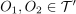, so existieren  bzw.
bzw.  mit 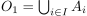 und 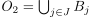
Nach der allgemeinen Distributivität für Vereinigung und Schnitt folgt:
mit 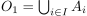 und 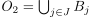
Nach der allgemeinen Distributivität für Vereinigung und Schnitt folgt:
Sei 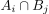 beliebig, so existiert nach Annahme 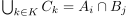 und durch Substitution aller Schnitte folgt, dass 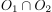 sich als Vereinigung von Mengen aus darstellen lässt.